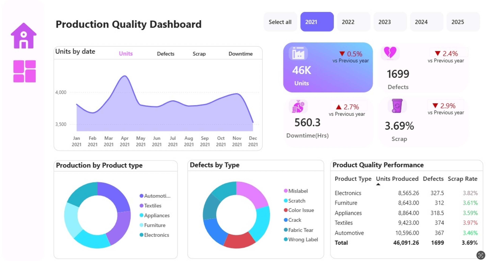
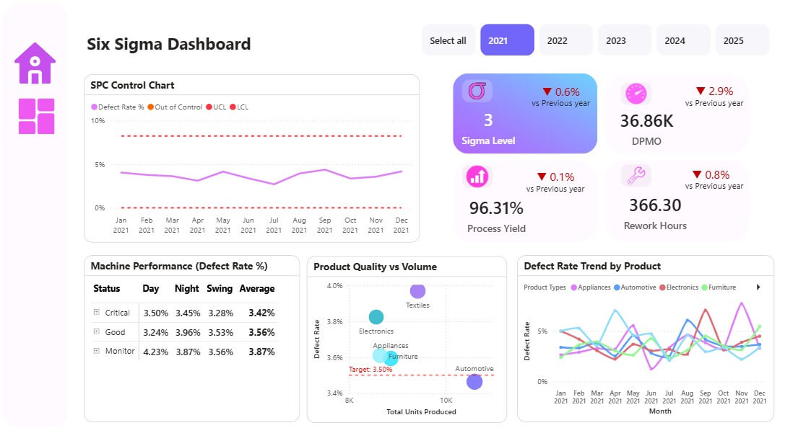

Data Engineering · Analytics · Portfolio 2026
An end-to-end manufacturing quality pipeline. From raw data to a live dashboard that tells a factory exactly what to fix first.
One language, every factory
Defects. Downtime. Waste. From Sydney to São Paulo, quality speaks one language.
Spin the globe. Watch the numbers this project tracks.
"The details are not the details.
They make the design."
— Charles Eames
Thousands of raw records, cleaned and enriched with machine learning, then served to a live dashboard the moment a question is asked.


A five-stage cloud pipeline that turns messy factory records into answers a manager can act on. Built to scale from thousands of rows to millions without changing a line.
Anyone can build a chart. This dashboard surfaces the story hidden inside five years of data. The exact machine, the exact shift, the exact week things went wrong.
What makes this different
Most projects show the finish line. This one shows the full race. The cleaning choices, the model trade-offs, the problems solved along the way.
Built with patience. Documented with honesty.
Two models, each chosen for one reason: they work where the obvious approaches fail. Every choice is explained, never assumed.
A manager shouldn't need to understand the pipeline to trust the number. These are the questions a quality lead, data architect, or plant manager would ask, each answered by design.
No buzzword stacking. Each technology earns its place, and every choice is documented in the repo.
Open to opportunities · Melbourne · Remote
Data engineer. End-to-end pipeline experience. Every decision documented. Every answer ready.